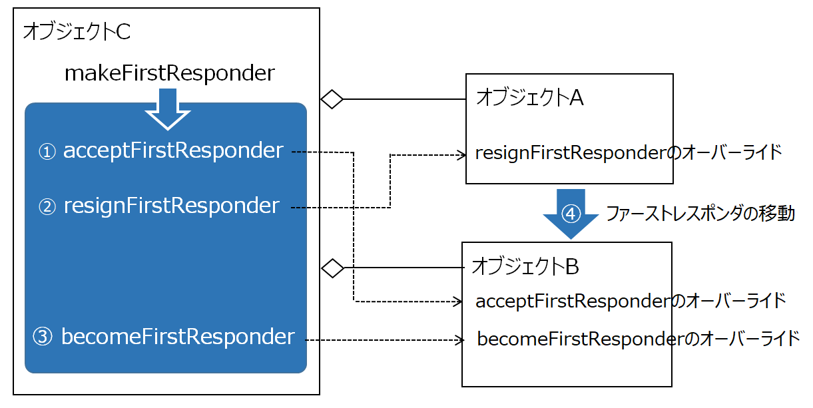
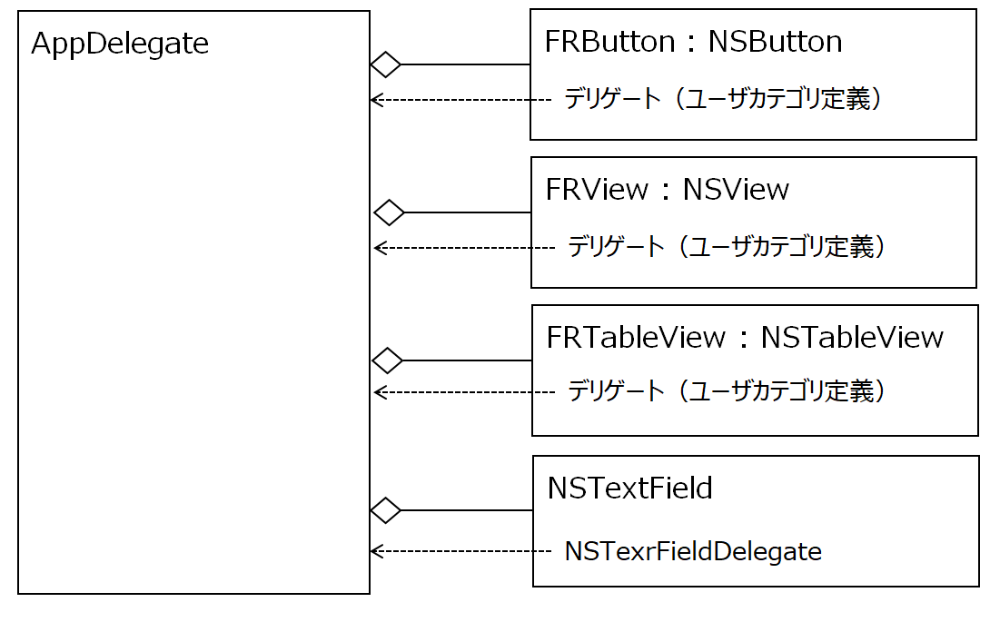

ファーストレスポンダとは？
アクティブなウィンドウの中で、ある時点で、キーボード操作により発生するイベントを受け取ることができるオブジェクトのことである。
ファーストレスポンダは、NSResponderクラスを継承したオブジェクトである。ウィンドウ、ビュー、NSControlクラスを継承したボタン、テキストフィールドなどユーザインタフェースに関わるクラスが該当する。
Mac既定の動作では、ファーストレスポンダはマウスのクリックやtabキーの操作によって移動する。通常は、ファーストレスポンダになっているオブジェクトは操作者がそれとわかるよう、外見（背景色や縁取りなど）が変わる。
ファーストレスポンダに対してイベントハンドラを実装する
ボタンのクリックによってある処理を実行するといったとき、操作をキーボードだけで行えるような対応を組み込むことが望ましい。この場合は、tabキーの移動で対象となるボタンをファーストレスポンダーとし、returnキーを押して処理を起動するといった方法が考えられる。
これらは、特定のコントロールがファーストレスポンダになったとき、特定のキーボードイベントに対して特定の処理を行うイベントハンドラを実装することによって実現する。
具体的には、tabキーを押されたとき次のコントロールにファーストレスポンダを移す処理は、NSResponderクラスに定義されているKeyDownメソッドをオーバーライドし、押下されたキーがtabのとき、ファーストレスポンダーを特定のコントロールに移すNSViewクラスのmakeFirstResponderメソッドを呼び出す。
ボタンに対応したメソッドを実行するには、KeyDownメソッドで、押下されたキーがreturnのとき、特定のメソッドを呼ぶという処理になる。
キー操作によりビューのファーストレスポンダを移動させる例
tabキーにより、ボタン → カスタムビュー → テーブルビュー → テキストフィールドの間をファーストレスポンダが移動する。
ファーストレスポンダになったとき、ボタンとカスタムビューは背景色が、テーブルビューの枠線はオレンジ色になる。テキストフィールドは入力フィールドのカーソルが点滅する。
処理の流れ
オブジェクトAからオブジェクトBにファーストレスポンダーを移す

オブジェクトCは、オブジェクトAとオブジェクトBを参照する。オブジェクトCは、オブジェクトAのデリゲートとなる。
オブジェクトAは、tabキーのKeyDownイベントを受け取ったら、オブジェクトCに対してファーストレスポンダを次に移す処理を依頼する。
オブジェクトCは、NSWindowクラスのmakeFirstResponderメソッドによりオブジェクトBをファーストレスポンダにする。
makeFirstResponderメソッドの内部的処理
このメソッドは、ファーストレスポンダの移動を確実に行うために次のようなステップを踏む。対象となるオブジェクトは、必要な応答を行うこと。
① オブジェクトBに対してファーストレスポンダを受け入れることができるか問い合わせる。受け入れ可能ならBは、YESを返す。（注１）（AcceptFirstResponderの戻り値）
② オブジェクトAに対してファーストレスポンダを放棄できるか問い合わせる。放棄可能ならAは、YESを返す。（resignFirstResponderの戻り値）
③ オブジェクトBに対してファーストレスポンダになることを要求する。可能ならBは、YESを返す。（becomeFirstResponderの戻り値）
この状態になってはじめてBはファーストレスポンダになることができる。それ以外は、ファーストレスポンダは移動しない。これは、それぞれのオブジェクトの事情により、ファーストレスポンダの移動の可否を決めたいとき、一連の手続きの中で制御する方法である。例えば、何らかの処理が終わらなければ次の処理に移れないといった、処理シーケンスが問題となるようなケースである。
(注1) 正確には、NOを返せば、オブジェクトをマウスでクリックしてもファーストレスポンダにならないが、makeFirstResponderメソッドによりファーストレスポンダにすることはできる。
クラス構造

コード例
KeyDownメソッッド
キーコードを判定し、tabの場合デリゲートに対して、次のオブジェクトにファーストレスポンダを移すよう依頼する。（FRButton.m, FRView.m, FRTableView.m）
デリゲートは、NSObjectクラスのカテゴリとする。（FRCategory.h）
NSTextFieldDelegate
テキストフィールドは、KeyDownメソッッドが定義されていないため、キーコードの判定にNSTextFieldDelegateを利用する。（AppDelegate.m）
デリゲート
各オブジェクトからの依頼を受け、ファーストレスポンダーを次のオブジェクトに移動するデリゲートメソッド（AppDelegate.m）
makeFirstResponderに対する応答
各オブジェクトは、makeFirstResponderに対する応答を行い、ファーストレスポンダの有無によりコントロールの外観を変更する。以下は、FRButtonの例
なお、NSTextFieldオブジェクトはこの処理は実装しない。makeFirstResponderに対する応答およびファーストレスポンダのときの外観はデフォルトの動作で問題ない。
ソースコード
アプリケーション制御：
AppDelegate
ボタン：
FRButton
テーブルビュー：
FRTableView
カテゴリ宣言：FRCategory.h
補足
レスポンダチェーンとは？
ファーストレスポンダになったコントロールにイベントハンドラ（例えばKeyDownメソッド）が実装されていない場合、システムはイベントハンドラが見つかるまでビューの階層を遡って探索していく。ビューが重なっている場合、一番手前のビューから奥のビューに向かい、コンテントビューからウィンドウに至る。これをレスポンダチェーンという。
イベントハンドラが実装されていた場合は、ハンドラの探索はそこで終わる。ただし、オーバライドしたメソッドの中で、superクラスのイベントハンドラを呼んでいた場合、レスポンダチェーン（探索）は続く。
このレスポンダチェーンと本稿で取り上げるファーストレスポンダのコントロール間の移動を混同しないように。（前者は垂直的な動き、後者は水平的な動きと理解すれば良い）
MacOSのシステム既定の動き
tabキーによりコントロール間でファーストレスポンダを移動する。コントロールとは、NSControlクラスを継承するオブジェクトで、ボタン、テキストフィールド、テーブルビュー、コンボボックス等である。ファーストレスポンダになっているコントロールはフォーカスリングという青い枠線で囲まれる。
システム環境設定→キーボド→ショートカット→フルキーボードアクセス によりtabキーで移動できるコントロールの種類を、以下のいずれかに絞ることができる。
・全てのコントロール
・テキストボックスとリストのみ（editable属性を持つ入力・編集が可能なコントロール）